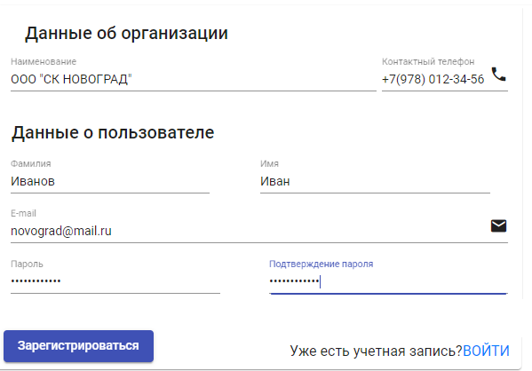

Регистрация нового предприятия
-
После запуска приложения через прикладное программное обеспечение (браузер) нажать на кнопку «Зарегистрироваться».
Рис. 1. Регистрация в Геоинформационной системе
-
Заполнить данные о регистрируемой организации.

Рис. 2. Данные об организации